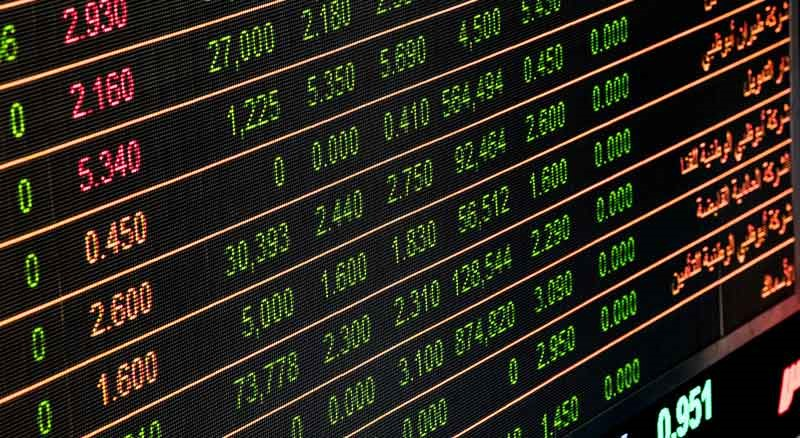

Позвонить
Позвонить
Области применения квантовых компьютеров
-
Лучшие финансовые услуги
D-Wave отстроил коммерческий квантовый компьютер, который содержит около 2000 кубитов и называется D-Wave 2000Q. Но это очень дорого и используется только несколькими организациями только для исследовательских целей. Квантовый компьютер D-Wave также можно использовать для управления сложными финансовыми расчетами и проблемами управления рисками. Кроме того, его можно использовать для сравнения и оптимизации новых финансовых моделей и снижения ключевых факторов глобального риска. Однако для глобальной финансовой системы потребуется более мощный квантовый компьютер, который находится в стадии исследований и разработок.
